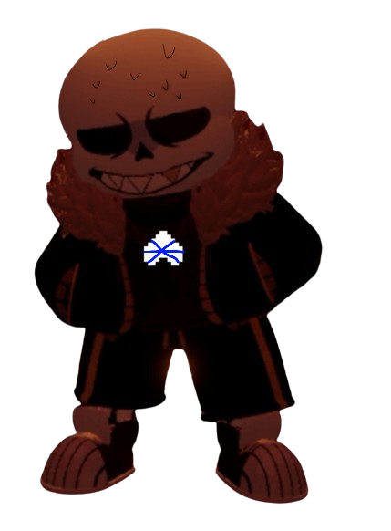

Previous Page
Undertale : Last Corridor
Error
Sa
ns
Information
* You Check,
Error
Sa
ns
ATK ??? DEF ???
* It Seems We Accidentally Stumbled Onto His World
* Focus Partner, These Strings Are Not Ordinary
Data
An AU Destroyer as he sees everything as an anomaly
Karmic Retribution : No
Stamina : 215
Stamina Gain Rate : The Same As Normal AfterTale
Theme
(Or You Can Check It Out
Here
(I Made It Loop So You Can Enjoy Hearing It While Reading This)
Passive
Stress Bar
If
Error
Sa
ns
Is Hit, He will lose less stamina but gain 4% Stress bar, if the stress bar hits max Error Will Rage And leave. Basically the charas team win
(Hit While Moving = 5 -> 3 Stamina, Hit While standing still = 15 -> 7 Stamina)
in order to lose some stress bar you will have to Hit/damage charas with attacks
(6hp damage = lose 2% stressbar)
Aerial Variants
If You Jumped while using a move at the same time the aerial Variants will be used
Lore
Error
was erasing an au timeline but when he was about to go into the anti-void he encountred ink.
ink would proceed to tell
Error
about 3 Charas That have Been going around destroying aus, at first
Error
did not care but when he heard some of the original undertale timelines Has been destroyed,
Error
proceed to keep the 3 anomalies in check by erasing them
Available Attacks
1st move( Bone Pull )
(10 stamina cost)
(CD : 6s)
2nd move ( Error Blasters )
(15 stamina cost)
(CD : 12s)
3rd Move ( Soul Crush )
(8 stamina cost)
(CD : 9s)
Normal Variant
Summon A Circle Of Bones On Your Cursor,The Bones Will Summon On Top Of The Map And
Error
Will Pull it Down With Strings
( Damage : 8Hp Per Bone )
Summon 6 Blasters randomly around the map and shoots a short burst beam at a random chara
( Damage : 12Hp )
Error Glows Red for 0.8s Before releasing strings infront of him,
if the strings succesfully hit a chara, Error Would Proceed to grip his hand and crush the Charas soul with the attached strings
( Can Hit Multiple Chara's )
( Slows Chara for 1.5s )
( Damage : 10hp )
Aerial Variant
Error
Would Proceed To Grab The Strings Above the map and swing infront of him leaving a trail of bones launching downwards
(6Hp Per Bones)
Error Would Grab The Strings Above And Summons 2 blasters Beside him Shooting a Short-Burst Beam at the mouse Cursor, after the blaster despawn error would then drop down
( Damage : 18Hp)
Error Would Summon Portals Above the charas and shoots out Strings , if hit the charas would be lifted for 2.5s
Available Attacks
4th Move ( ??? )
(?? stamina cost)
(CD : ??s)
5th Move ( ??? )
(?? stamina cost)
(CD : ??s)
6th Move ( ??? )
(?? stamina cost)
(CD : ??s)
Normal Variant
( Insert Attack Desc )
( Insert Attack Desc )
( Insert Attack Desc )
Aerial Variant
( Insert Attack Desc )
( Insert Attack Desc )
( Insert Attack Desc )
7th Move ( Stringed Puppets )
( Stamina Usage : 10 )
( CD : 50s )
Error
Would Create A Portal Near The Charas And Force Them Into It With Strings, Charas would Proceed to fight A Random Sanses That
Error
Could Control
Forces The Chara To A Portal,And Fight These Sanses In Their Respective World
(All Have Equal Chances)
Swap Sans
(You can click the image)

Fell Sans
(You can click the image)
Outer Sans
(You can click the image)
Previous Page
Next Page